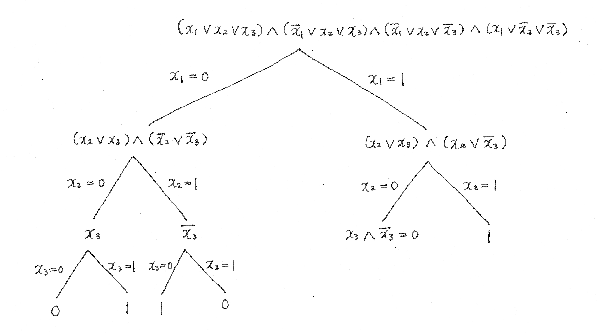
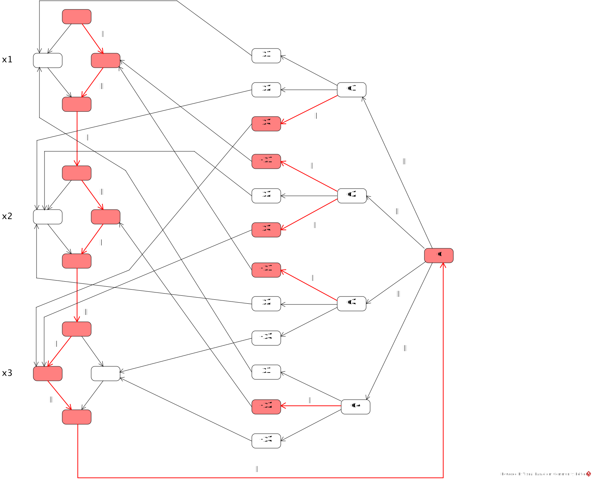

In the following, lg x = log2x. Let e be the # of edges of G. We encode k and m vertices by binary numbers, and each edge by a pair of its end vertices. The encoding ⟨G, k⟩ then includes a list of m vertices occupying m·(lg m) bits, a list of e edges occupying 2·e·(lg m) bits, and k occupying lg k bits. Because a suitable number of delimiter symbols are needed, m·(lg m) + 2·e·(lg m) + lg k ≤ n where n is the size of ⟨G, k⟩. The amount of space required for the variables used in the algorithm is as follows.
m: O(lg m) (the value of m is counted from the list of vertices)
j: O(lg m), since j ≤ k ≤ m holds
V: O(m·(lg m))
E (the list of edges): O(2·e·(lg m)) (The marked edges can be encoded by attaching a special symbol.)
vi: O(lg m)
The total space requirement is therefore:
O(lg m) + O(lg m) + O(m·(lg m)) + O(2·e·(lg m)) + O(lg m) =
O(m·(lg m)) + O(2·e·(lg m)) =
O(n) + O(n) =
O(n).
ψ(x1, x2, x3) = (x1 ∨ x2 ∨ x3) ∧ (¬x1 ∨ x2 ∨ x3) ∧ (¬x1 ∨ x2 ∨ ¬x3) ∧ (x1 ∨ ¬x2 ∨ ¬x3)
-
Give an evaluation tree for ψ by assigning xi = 0 and 1, 1 ≤ i ≤ 3.
Formula simplification is applied in each step and evaluation is terminated as soon as the value is determined.
 -
Evaluate each of the following formulas and determine which player (E or A) has a winning strategy.
Justify your answers.
- ∃x1∀x2∃x3ψ(x1, x2, x3)
E has a winning strategy.
E selects x1=0.
If A selects x2=0, E selects x3=1 and ψ evaluates to 1.
If A selects x2=1, E selects x3=0 and ψ evaluates to 1.
Hence ∃x1∀x2∃x3ψ(x1, x2, x3) is true.
- ∀x1∃x2∀x3ψ(x1, x2, x3)
A has a winning strategy.
A selects x1=0.
If E selects x2=0, A selects x3=0 and ψ evaluates to 0.
If E selects x2=1, A selects x3=1 and ψ evaluates to 0.
Hence ∀x1∃x2∀x3ψ(x1, x2, x3) is false.
- ∃x1∀x2∃x3ψ(x1, x2, x3)
-
Give the directed graph generated from the formula by the polynomial-time reduction.
The directed graphs are shown below.
-
Give an assignment for xi, 1 ≤ i ≤ 3, that is an instance of a winning strategy for
the formula, and show the corresponding path selected by players I and II in the graph.
Mark the edges of the path by "I" or "II" according as they are selected by player I or II, respectively.
(i) ∃x1∀x2∃x3ψ(x1, x2, x3)
An instance of E's (I's) winning strategy is x1=0, x2=0, x3=1. Endgame: No matter which clause-node c1, c2, c3, or c4 II goes to from node c, I can go to a true literal in that clause to force a win.

(ii) ∀x1∃x2∀x3ψ(x1, x2, x3) is expanded to ∃x0∀x1∃x2∀x3∃x4ψ(x1, x2, x3) by adding dummy quantifiers ∃x0 and ∃x4.
An instance of A's (II's) winning strategy is x1=0, x2=0, x3=0. The values of x0 and x4 are immaterial as they are dummy variables. Endgame: II goes to the false clause node c1 from c. No matter which literal x1, x2, or x3 I goes to from c1, II can go to an unvisited node to force a win.

Suppose ∃A ∈ NP ∩ PSPACE-Complete. By Theorem 6 proved in class, NP = PSPACE. NPC and PSPACE-Complete are the subclasses of NP and PSPACE, respectively, to which all NP and PSPACE languages reduce in polynomial time. Since NP = PSPACE, then, NPC = PSPACE-Complete.